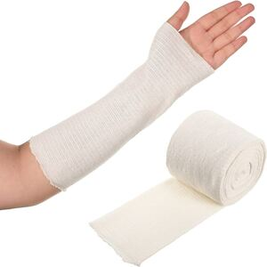
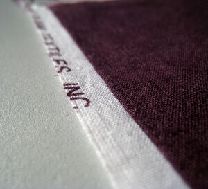
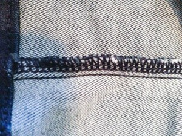
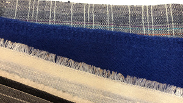

ⲥⲉⲃⲉⲛ B nn, bandage, selvage: Pro 7 16 (SA = Gk), Jo 11 44 (SAA2 do) κειρία; K 390 ϩⲁⲛⲥ. حواشى، لفائف, ib 126 ⲛⲓⲥ. among weaver's (قزّاز) furniture ﺣﹶ (v Almk 1 313); ROC 25 251 bade loose ⲛⲓⲥ. ⲉⲛⲁⲩⲙⲏⲣ ⲙⲙⲟϥ (sc corpse). Cf sabanum (Stern 137).




ⲥⲉⲃⲉⲛ B nn, bandage, selvage: Pro 7 16 (SA = Gk), Jo 11 44 (SAA2 do) κειρία; K 390 ϩⲁⲛⲥ. حواشى، لفائف, ib 126 ⲛⲓⲥ. among weaver's (قزّاز) furniture ﺣﹶ (v Almk 1 313); ROC 25 251 bade loose ⲛⲓⲥ. ⲉⲛⲁⲩⲙⲏⲣ ⲙⲙⲟϥ (sc corpse). Cf sabanum (Stern 137).
| view | ⲧⲟ(ⲉ)ⲓⲥ, ⲧⲟ(ⲉ)ⲓⲥⲉ S ⲧⲁⲉⲓⲥ SfA ⲧⲱⲓⲥ, ⲧⲱⲓⲥⲓ B | (noun feminine) piece, rag of cloth, linen [ρακος, επιβλημα]
used as bag, purse1646 |
| view | ⲧⲉⲃⲓ, ⲧⲉⲡⲓ, ⲧⲉⲡⲉ B ⲧⲏⲃⲓ F | (noun masculine) strip, bandage of linen1567 |
| view | ⲡⲗϭⲉ, ⲡⲉⲗϭⲉ, ⲡⲣϭⲉ, ⲡⲉⲗϫⲉ S ⲫⲉⲗϫⲓ B | (noun masculine) f once, split, torn cloth, rag [ρακιον]
as adj S,B, worn, old [παλαιος]1264 |